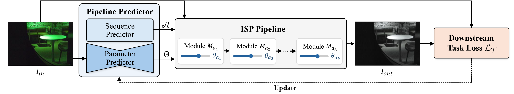
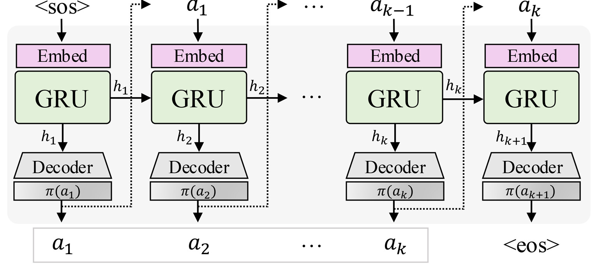
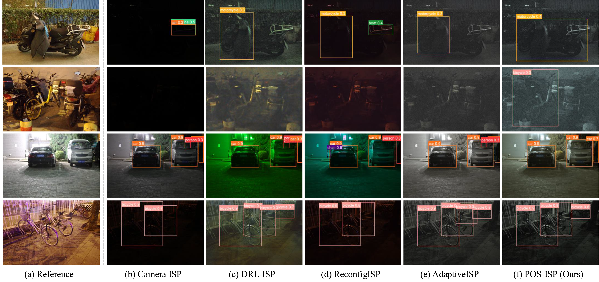
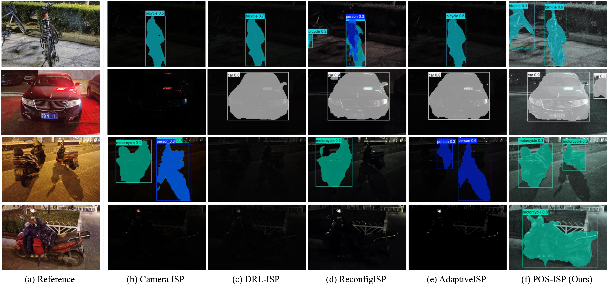

Task-aware ISP optimization models image signal proessing (ISP) as a composition of predefined operations and adapts it to task-specific objectives, yet jointly optimizing module sequence and parameters remains challenging. Recent methods employ neural architecture search (NAS) or step-wise reinforcement learning (RL), but NAS introduces training-inference mismatch, and step-wise RL incurs unstable training and high computational overhead due to decision-making at each stage. In this paper, we propose POS-ISP, a sequence-level RL framework that reformulates modular ISP optimization as a global sequence prediction problem. It predicts the entire module sequence and its parameters in a single forward pass and optimizes the pipeline using a terminal task reward, removing intermediate supervision and redundant executions to enhance stability and efficiency. Extensive experiments across multiple downstream tasks demonstrate that POS-ISP consistently improves task performance while reducing computational cost and memory usage. These results highlight sequence-level joint optimization as a stable and efficient paradigm for task-aware ISP design.
POS-ISP achieves state-of-the-art performance across multiple downstream tasks while maintaining low computational overhead.
POS-ISP constructs a task-adaptive ISP pipeline using two predictors: a sequence predictor that determines the ordered module sequence, and a parameter predictor that estimates image-adaptive parameters for the selected pipeline.

The sequence predictor autoregressively models the probability of ISP module sequences and predicts the next module conditioned on the previously selected ones. It is implemented with a GRU-based recurrent architecture, which captures inter-module dependencies while enabling efficient sequence-level prediction.
The parameter predictor extracts a compact image representation with a lightweight CNN encoder and predicts parameter sets for all candidate ISP modules. During pipeline construction, only the parameters corresponding to the selected module sequence are applied.

Detailed architecture of the sequence predictor. It predicts the ISP pipeline autoregressively until the end-of-sequence token is produced.
POS-ISP consistently outperforms prior task-aware ISP methods on object detection and instance segmentation.
| Method | LOD-Dark | LOD-All | ||||
|---|---|---|---|---|---|---|
| mAP@0.5:0.95 | mAP@0.5 | mAP@0.75 | mAP@0.5:0.95 | mAP@0.5 | mAP@0.75 | |
| Input RAW | 44.1 | 67.7 | 47.5 | 54.3 | 71.4 | 57.1 |
| Camera ISP | 37.6 | 55.4 | 41.6 | 49.6 | 65.5 | 53.2 |
| DRL-ISP | 44.2 | 67.8 | 48.4 | 54.5 | 72.1 | 58.5 |
| ReconfigISP | 43.7 | 66.7 | 47.8 | 51.0 | 68.5 | 54.4 |
| AdaptiveISP | 47.2 | 71.4 | 51.7 | 56.8 | 73.5 | 61.4 |
| POS-ISP (Ours) | 47.8 | 72.1 | 52.8 | 57.2 | 73.9 | 61.7 |
| Method | LIS-Dark | LIS-All | ||||
|---|---|---|---|---|---|---|
| mAP@0.5:0.95 | mAP@0.5 | mAP@0.75 | mAP@0.5:0.95 | mAP@0.5 | mAP@0.75 | |
| Input RAW | 27.8 | 45.6 | 27.9 | 32.6 | 52.3 | 33.0 |
| Camera ISP | 20.1 | 35.1 | 20.0 | 30.4 | 48.9 | 31.0 |
| DRL-ISP | 27.1 | 44.7 | 27.4 | 23.6 | 40.1 | 23.8 |
| ReconfigISP | 24.2 | 40.8 | 24.5 | 31.1 | 51.2 | 31.0 |
| AdaptiveISP | 25.2 | 42.3 | 25.2 | 32.4 | 52.3 | 32.5 |
| POS-ISP (Ours) | 32.1 | 51.8 | 32.1 | 34.9 | 55.9 | 34.9 |
Quantitative comparisons on object detection and instance segmentation benchmarks. POS-ISP achieves the best results on all reported metrics.
Since ISP operates as a preprocessing stage before downstream vision models, it must run under strict computational and memory constraints. POS-ISP minimizes prediction overhead while maintaining strong task performance.
| Method | Params (M) | MACs (M) | Peak GPU Memory (MB) | Runtime (ms) | FPS |
|---|---|---|---|---|---|
| DRL-ISP | 6.57 | 155.3 | 1013.9 | 15.71 | 63.65 |
| AdaptiveISP | 7.18 | 70.2 | 39.6 | 12.72 | 78.62 |
| POS-ISP (Ours) | 0.53 | 15.1 | 14.4 | 1.55 | 645.16 |
All results are measured on a single NVIDIA RTX 2080 Ti with input resolution of 512 × 512. Runtime excludes the execution time of ISP modules.
| Method | Latency (ms) | FPS |
|---|---|---|
| AdaptiveISP | 29.0 | 34.48 |
| POS-ISP | 7.21 | 138.70 |
On-device runtime measured on a Galaxy S10 CPU. POS-ISP runs about 4× faster than AdaptiveISP, enabling real-time mobile deployment with negligible overhead.
Representative comparisons on low-light object detection scenes. POS-ISP improves visibility and produces more reliable downstream detections than prior task-aware ISP methods.

Representative comparisons on low-light instance segmentation. POS-ISP preserves object structure more clearly and yields higher-quality masks under challenging illumination.

@inproceedings{won2026posisp,
title = {POS-ISP: Pipeline Optimization at the Sequence Level for Task-aware ISP},
author = {Won, Jiyun and Yang, Heemin and Kim, Woohyeok and Ok, Jungseul and Cho, Sunghyun},
booktitle = {Proceedings of the IEEE/CVF Conference on Computer Vision and Pattern Recognition (CVPR) Findings},
year = {2026}
}